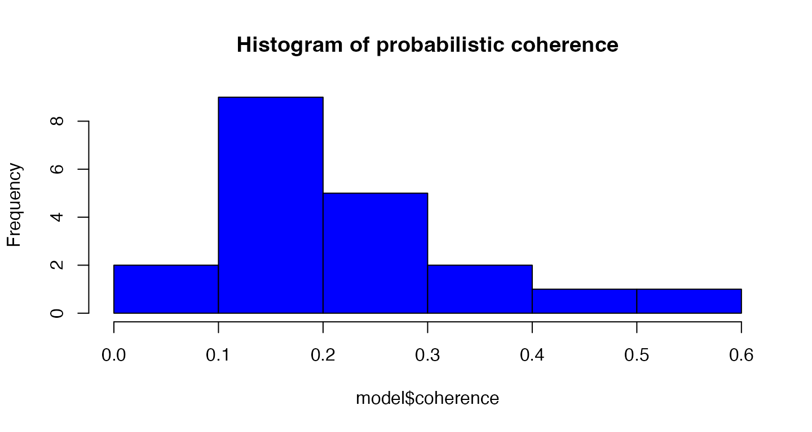
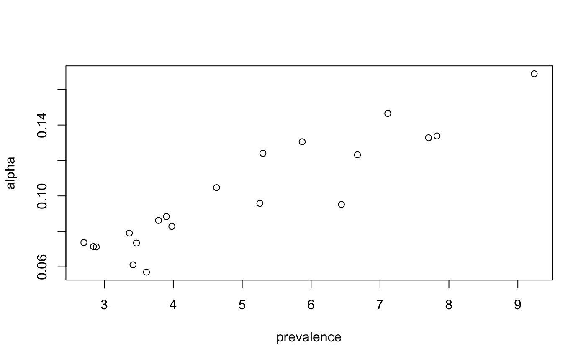
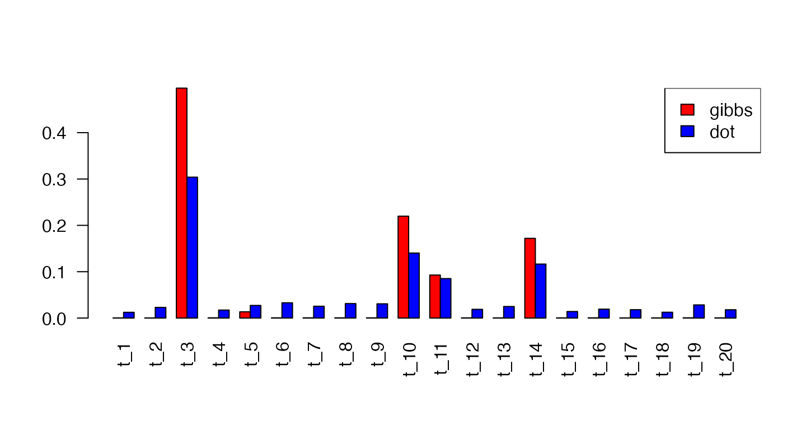
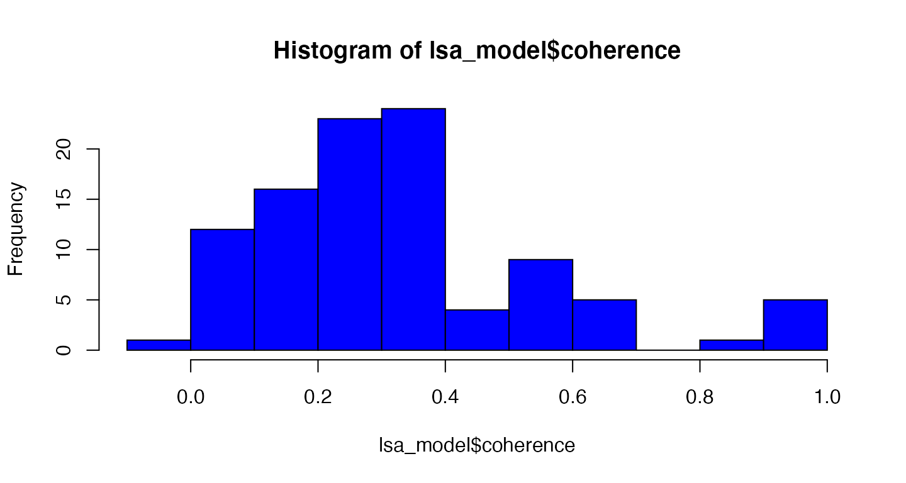
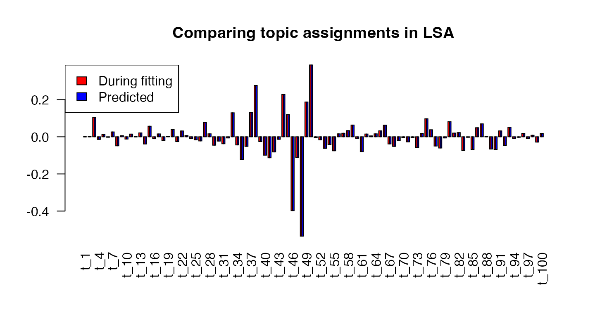
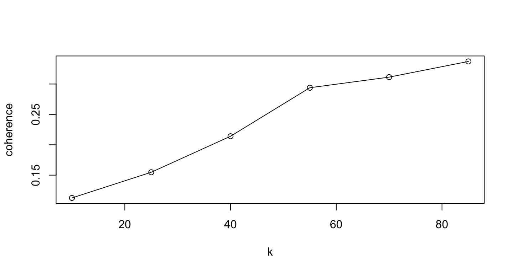

vignettes/c_topic_modeling.Rmd
c_topic_modeling.RmdtextmineR has extensive functionality for topic modeling. You can fit Latent Dirichlet Allocation (LDA), Correlated Topic Models (CTM), and Latent Semantic Analysis (LSA) from within textmineR. (Examples with LDA and LSA follow below.) As of this writing, textmineR’s LDA and CTM functions are wrappers for other packages to facilitate a consistent workflow. (And textmineR takes advantage of the RSpectra package for LSA’s single-value decomposition.) Plans exist to implement LDA natively with Rcpp sometime in 2018.
textmineR’s consistent representation of topic models boils down to two matrices. The first, “theta” (\(\Theta\)), has rows representing a distribution of topics over documents. The second, phi (\(\Phi\)), has rows representing a distribution of words over topics. In the case of probabilistic models, these are categorical probability distributions. For non-probabilistic models (e.g. LSA) these distributions are, obviously, not probabilities. With LSA, for example, there is a third object representing the singular values in the decomposition.
In addition, textmineR has utility functions for topic models. This includes some original research. Examples include an R-squared for probabilistic topic models (working paper here), probabilistic coherence (a measure of topic quality), and a topic labeling function based on most-probable bigrams. Other utilities are demonstrated below
library(textmineR)
#> Loading required package: Matrix
# load nih_sample data set from textmineR
data(nih_sample)
str(nih_sample)
#> 'data.frame': 100 obs. of 44 variables:
#> $ APPLICATION_ID : chr "8693991" "8693362" "8607498" "8697008" ...
#> $ ABSTRACT_TEXT : chr "Methamphetamine (MA) is remarkably addictive and relapse to excessive use is highly probable and poses serious "| __truncated__ " Project Summary Risk bimarkers have become increasingly important in clinical decision making, guiding patient"| __truncated__ " DESCRIPTION (provided by applicant): Despite enormous efforts, no effective vaccine is currently available "| __truncated__ " DESCRIPTION (provided by applicant): This four-year K01 award application is to provide intensive multi-dis"| __truncated__ ...
#> $ ACTIVITY : chr "P50" "R01" "R21" "K01" ...
#> $ ADMINISTERING_IC : chr "DA" "GM" "AI" "AI" ...
#> $ APPLICATION_TYPE : chr "5" "2" "5" "5" ...
#> $ ARRA_FUNDED : chr "N" "N" "N" "N" ...
#> $ AWARD_NOTICE_DATE : chr "06/30/2014" "05/27/2014" "01/03/2014" "07/11/2014" ...
#> $ BUDGET_START : chr "07/01/2014" "06/01/2014" "02/01/2014" "08/01/2014" ...
#> $ BUDGET_END : chr "06/30/2015" "04/30/2015" "01/31/2015" "07/31/2015" ...
#> $ CFDA_CODE : chr "" "859" "855" "855" ...
#> $ CORE_PROJECT_NUM : chr "P50DA018165" "R01GM085047" "R21AI100696" "K01AI100681" ...
#> $ ED_INST_TYPE : chr "" "" "SCHOOLS OF MEDICINE" "SCHOOLS OF MEDICINE" ...
#> $ FOA_NUMBER : chr "PAR-10-189" "PA-11-260" "PA-11-261" "PA-11-190" ...
#> $ FULL_PROJECT_NUM : chr "5P50DA018165-08" "2R01GM085047-05" "5R21AI100696-02" "5K01AI100681-03" ...
#> $ FUNDING_ICs : chr "NIDA:212488\\" "NIGMS:326324\\" "NIAID:209613\\" "NIAID:132182\\" ...
#> $ FUNDING_MECHANISM : chr "Research Centers" "Research Projects" "Research Projects" "Other Research Related" ...
#> $ FY : chr "2014" "2014" "2014" "2014" ...
#> $ IC_NAME : chr "NATIONAL INSTITUTE ON DRUG ABUSE" "NATIONAL INSTITUTE OF GENERAL MEDICAL SCIENCES" "NATIONAL INSTITUTE OF ALLERGY AND INFECTIOUS DISEASES" "NATIONAL INSTITUTE OF ALLERGY AND INFECTIOUS DISEASES" ...
#> $ NIH_SPENDING_CATS : chr "" "" "" "" ...
#> $ ORG_CITY : chr "PORTLAND" "SEATTLE" "NEW HAVEN" "BALTIMORE" ...
#> $ ORG_COUNTRY : chr "UNITED STATES" "UNITED STATES" "UNITED STATES" "UNITED STATES" ...
#> $ ORG_DEPT : chr "" "" "MICROBIOLOGY/IMMUN/VIROLOGY" "EMERGENCY MEDICINE" ...
#> $ ORG_DISTRICT : chr "03" "" "03" "07" ...
#> $ ORG_DUNS : chr "" "" "" "" ...
#> $ ORG_FIPS : chr "" "US" "US" "US" ...
#> $ ORG_NAME : chr "OREGON HEALTH &SCIENCE UNIVERSITY" "FRED HUTCHINSON CANCER RESEARCH CENTER" "YALE UNIVERSITY" "JOHNS HOPKINS UNIVERSITY" ...
#> $ ORG_STATE : chr "OR" "WA" "CT" "MD" ...
#> $ ORG_ZIPCODE : chr "" "981091024" "065103209" "212182608" ...
#> $ PHR : chr "Many individuals try MA, but only some become addicted and continue to use MA even though it has profoundly adv"| __truncated__ "PUBLIC HEALTH RELEVANCE: The research proposal addresses the pressing need for strong statistical input in the "| __truncated__ "PUBLIC HEALTH RELEVANCE: This application proposes the development of single-molecule Fluorescence Resonance En"| __truncated__ " Project Narrative Emergency department-based HIV testing programs in the United States have identified thousan"| __truncated__ ...
#> $ PI_IDS : chr "1910136;" "8572341;" "7051811;" "8633321;" ...
#> $ PI_NAMEs : chr "PHILLIPS, TAMARA J;" "ZHENG, YINGYE;" "MOTHES, WALTHER H;" "HSIEH, YU-HSIANG;" ...
#> $ PROGRAM_OFFICER_NAME : chr "" "LYSTER, PETER " "SHARMA, OPENDRA K." "MCKAIG, ROSEMARY G." ...
#> $ PROJECT_START : chr "" "09/04/2009" "02/01/2013" "08/15/2012" ...
#> $ PROJECT_END : chr "" "04/30/2018" "01/31/2015" "07/31/2016" ...
#> $ PROJECT_TERMS : chr "Acute;Adverse effects;Animal Model;Animals;Anxiety;Behavior;Behavioral;Behavioral Genetics;Biometry;Blood speci"| __truncated__ "Address;Aftercare;Algorithms;base;Biological;Biological Markers;Breast Cancer Detection;cancer therapy;case con"| __truncated__ "Affect;AIDS/HIV problem;Antibodies;Antibody Binding Sites;Binding (Molecular Function);Communities;Coupled;Deve"| __truncated__ "Accident and Emergency department;Acute;Address;Affect;AIDS prevention;AIDS/HIV problem;Area;Baltimore;base;Beh"| __truncated__ ...
#> $ PROJECT_TITLE : chr "Genetic and Neuroimmunological Factors in Methamphetamine Addicition" "Statistical Methods for Prospective Evaluation of Biomarkers" "Single molecule imaging of HIV Env" "Cost-Effectiveness of ED HIV Testing Program Agent-Based Modeling Approach" ...
#> $ SERIAL_NUMBER : chr "18165" "85047" "100696" "100681" ...
#> $ STUDY_SECTION : chr "ZDA1" "CBSS" "VACC" "AIDS" ...
#> $ STUDY_SECTION_NAME : chr "Special Emphasis Panel" "Cancer Biomarkers Study Section" "HIV/AIDS Vaccines Study Study Section" "Acquired Immunodeficiency Syndrome Research Review Committee" ...
#> $ SUBPROJECT_ID : chr "6488" "" "" "" ...
#> $ SUFFIX : chr "" "" "" "" ...
#> $ SUPPORT_YEAR : chr "8" "5" "2" "3" ...
#> $ TOTAL_COST : chr "" "326324" "209613" "132182" ...
#> $ TOTAL_COST_SUB_PROJECT: chr "212488" "" "" "" ...
# create a document term matrix
dtm <- CreateDtm(doc_vec = nih_sample$ABSTRACT_TEXT, # character vector of documents
doc_names = nih_sample$APPLICATION_ID, # document names
ngram_window = c(1, 2), # minimum and maximum n-gram length
stopword_vec = c(stopwords::stopwords("en"), # stopwords from tm
stopwords::stopwords(source = "smart")), # this is the default value
lower = TRUE, # lowercase - this is the default value
remove_punctuation = TRUE, # punctuation - this is the default
remove_numbers = TRUE, # numbers - this is the default
verbose = FALSE, # Turn off status bar for this demo
cpus = 2) # default is all available cpus on the system
dtm <- dtm[,colSums(dtm) > 2]To fit an LDA model in textmineR, use the FitLdaModel function. Input is a document term matrix. textmineR implements 2 methods for LDA, Gibbs sampling, and variational expectation maximization (also known as variational Bayes). The default is Gibbs sampling.
# Fit a Latent Dirichlet Allocation model
# note the number of topics is arbitrary here
# see extensions for more info
set.seed(12345)
model <- FitLdaModel(dtm = dtm,
k = 20,
iterations = 200, # I usually recommend at least 500 iterations or more
burnin = 180,
alpha = 0.1,
beta = 0.05,
optimize_alpha = TRUE,
calc_likelihood = TRUE,
calc_coherence = TRUE,
calc_r2 = TRUE,
cpus = 2) The output from the model is an S3 object of class lda_topic_model. It contains several objects. The most important are three matrices: theta gives \(P(topic_k|document_d)\), phi gives \(P(token_v|topic_k)\), and gamma gives \(P(topic_k|token_v)\). (For more on gamma, see below.) Then data is the DTM or TCM used to train the model. alpha and beta are the Dirichlet priors for topics over documents and tokens over topics, respectively. The log_likelihood is \(P(tokens|topics)\) at each iteration. coherence gives the probabilistic coherence of each topic. And r2 is the R-squared of the model given the data.
str(model)
#> List of 9
#> $ phi : num [1:20, 1:2379] 4.11e-05 1.33e-03 4.80e-05 1.61e-03 6.70e-05 ...
#> ..- attr(*, "dimnames")=List of 2
#> .. ..$ : chr [1:20] "t_1" "t_2" "t_3" "t_4" ...
#> .. ..$ : chr [1:2379] "discovered" "expected" "goal_research" "births" ...
#> $ theta : num [1:100, 1:20] 0.010145 0.204369 0.120183 0.002828 0.000671 ...
#> ..- attr(*, "dimnames")=List of 2
#> .. ..$ : chr [1:100] "8693991" "8693362" "8607498" "8697008" ...
#> .. ..$ : chr [1:20] "t_1" "t_2" "t_3" "t_4" ...
#> $ gamma : num [1:20, 1:2379] 0.0175 0.3467 0.017 0.3493 0.0166 ...
#> ..- attr(*, "dimnames")=List of 2
#> .. ..$ : chr [1:20] "t_1" "t_2" "t_3" "t_4" ...
#> .. ..$ : chr [1:2379] "discovered" "expected" "goal_research" "births" ...
#> $ data :Formal class 'dgCMatrix' [package "Matrix"] with 6 slots
#> .. ..@ i : int [1:11419] 11 49 96 5 6 3 86 89 12 14 ...
#> .. ..@ p : int [1:2380] 0 3 5 8 9 12 13 14 15 18 ...
#> .. ..@ Dim : int [1:2] 100 2379
#> .. ..@ Dimnames:List of 2
#> .. .. ..$ : chr [1:100] "8693991" "8693362" "8607498" "8697008" ...
#> .. .. ..$ : chr [1:2379] "discovered" "expected" "goal_research" "births" ...
#> .. ..@ x : num [1:11419] 1 1 1 1 2 1 1 1 3 1 ...
#> .. ..@ factors : list()
#> $ alpha : num [1:20] 0.1328 0.0883 0.124 0.0715 0.0862 ...
#> $ beta : num [1:20, 1:2379] 0.05 0.05 0.05 0.05 0.05 0.05 0.05 0.05 0.05 0.05 ...
#> $ log_likelihood:'data.frame': 20 obs. of 2 variables:
#> ..$ iteration : num [1:20] 0 10 20 30 40 50 60 70 80 90 ...
#> ..$ log_likelihood: num [1:20] -178217 -166743 -163693 -162605 -161958 ...
#> $ coherence : Named num [1:20] 0.0642 0.2612 0.0905 0.3991 0.1508 ...
#> ..- attr(*, "names")= chr [1:20] "t_1" "t_2" "t_3" "t_4" ...
#> $ r2 : num 0.275
#> - attr(*, "class")= chr "lda_topic_model"Once we have created a model, we need to evaluate it. For overall goodness of fit, textmineR has R-squared and log likelihood. R-squared is interpretable as the proportion of variability in the data explained by the model, as with linear regression. For a full derivation and explanation of properties. See the working paper, here.
The log likelihood has a more difficult interpretation. Though, as shown in the R-squared working paper, R-squared and log likelihood are highly correlated.
# R-squared
# - only works for probabilistic models like LDA and CTM
model$r2
#> [1] 0.2747765
# log Likelihood (does not consider the prior)
plot(model$log_likelihood, type = "l")Next, we turn our attention to topic quality. There are many “topic coherence” metrics available in the literature. For example, see this paper or this paper. textmineR implements a new topic coherence measure based on probability theory. (A formal write up of this metric will be included in my PhD dissertation, expected 2020.)
Probabilistic coherence measures how associated words are in a topic, controlling for statistical independence. For example, suppose you have a corpus of articles from the sports section of a newspaper. A topic with the words {sport, sports, ball, fan, athlete} would look great if you look at correlation, without correcting for independence. But we actually know that it’s a terrible topic because the words are so frequent in this corpus as to be meaningless. In other words, they are highly correlated with each other but they are statistically-independent of each other.
For each pair of words \(\{a, b\}\) in the top M words in a topic, probabilistic coherence calculates \(P(b|a) - P(b)\), where \(\{a\}\) is more probable than \(\{b\}\) in the topic.
Here’s the logic: if we restrict our search to only documents that contain the word \(\{a\}\), then the word \(\{b\}\) should be more more probable in those documents than if chosen at random from the corpus. \(P(b|a)\) measures how probable \(\{b\}\) is only in documents containing \(\{a\}\). \(P(b)\) measures how probable \(\{b\}\) is in the corpus as a whole. If \(\{b\}\) is not more probable in documents containing \(\{a\}\), then the difference \(P(b|a) - P(b)\) should be close to zero.
For example, suppose the top 4 words in a topic are \(\{a, b, c, d\}\). Then, we calculate
And all 6 differences are averaged together, giving the probabilistic coherence measure.
# probabilistic coherence, a measure of topic quality
# this measure can be used with any topic model, not just probabilistic ones
summary(model$coherence)
#> Min. 1st Qu. Median Mean 3rd Qu. Max.
#> 0.0060 0.1188 0.1543 0.1787 0.2187 0.4117
hist(model$coherence,
col= "blue",
main = "Histogram of probabilistic coherence")
We’ll see the real value of coherence after calculating a few more objects. In the chunk below, we will
We’ll then pull these together, along with coherence, into a table that summarizes the topic model.
# Get the top terms of each topic
model$top_terms <- GetTopTerms(phi = model$phi, M = 5)| t_1 | develop | data | design | time | methods |
| t_2 | injury | determine | cmybp | function | fragment |
| t_3 | study | inflammation | assess | patients | therapy |
| t_4 | mast | cns | cell | mast_cell | fc |
| t_5 | ptc | treatment | brafv | tissue | dcis |
| t_6 | ipf | lung | data | expression | studies |
# Get the prevalence of each topic
# You can make this discrete by applying a threshold, say 0.05, for
# topics in/out of docuemnts.
model$prevalence <- colSums(model$theta) / sum(model$theta) * 100
# prevalence should be proportional to alpha
plot(model$prevalence, model$alpha, xlab = "prevalence", ylab = "alpha")
# textmineR has a naive topic labeling tool based on probable bigrams
model$labels <- LabelTopics(assignments = model$theta > 0.05,
dtm = dtm,
M = 1)
head(model$labels)
#> label_1
#> t_1 "radiation_necrosis"
#> t_2 "kda_fragment"
#> t_3 "cardiovascular_disease"
#> t_4 "mast_cell"
#> t_5 "radiation_necrosis"
#> t_6 "laparoscopic_fundoplication"
# put them together, with coherence into a summary table
model$summary <- data.frame(topic = rownames(model$phi),
label = model$labels,
coherence = round(model$coherence, 3),
prevalence = round(model$prevalence,3),
top_terms = apply(model$top_terms, 2, function(x){
paste(x, collapse = ", ")
}),
stringsAsFactors = FALSE)model$summary[ order(model$summary$prevalence, decreasing = TRUE) , ][ 1:10 , ]| topic | label_1 | coherence | prevalence | top_terms | |
|---|---|---|---|---|---|
| t_12 | t_12 | long_term | 0.258 | 9.238 | models, long, term, development, long_term |
| t_20 | t_20 | mental_health | 0.158 | 7.827 | research, core, center, support, investigators |
| t_1 | t_1 | radiation_necrosis | 0.064 | 7.705 | develop, data, design, time, methods |
| t_19 | t_19 | cancer_prevention | 0.104 | 7.113 | research, health, program, training, cancer |
| t_7 | t_7 | mast_cell | 0.143 | 6.672 | cells, cell, aim, specific, pathways |
| t_17 | t_17 | provided_applicant | 0.121 | 6.440 | rna, structural, structure, cdk, activity |
| t_11 | t_11 | risk_factors | 0.120 | 5.871 | risk, health, factors, study, early |
| t_3 | t_3 | cardiovascular_disease | 0.090 | 5.300 | study, inflammation, assess, patients, therapy |
| t_16 | t_16 | risk_factors | 0.115 | 5.256 | genetic, disease, ma, psoriasis, exposure |
| t_10 | t_10 | breast_cancer | 0.181 | 4.628 | brain, cancer, imaging, metastatic, tumor |
Ok, you’ve built a topic model. You’ve decided how well it fits your data. You’ve examined coherence, top words, and so on. Now you want to get topic distributions for new documents. (Remember, we only used 500 of our 5,000 documents to train the model.) textmineR provides a couple of ways to do this. The full Bayesian approach is to use Gibbs sampling, holding the topic distributions in phi fixed. The more frequentist way is using the gamma object returned when we ran FitLdaModel. (You can also calculate it separately with the CalcGamma function.)
gamma or \(\Gamma\) is a matrix whose entries represent $P(|). To calculate this, we need Bayes’ Rule.
The rows of phi or \(\Phi\) are \(P(\text{token}|\text{topic})\). However, to get predictions for new documents, we need \(P(\text{topic}|\text{token})\). Remembering Bayes’ Rule, we get
Detail-oriented readers may wonder how you can get \(P(\text{topic})\). We can get this through \(\sum_j P(\text{topic}|\text{document}_j)P(\text{document}_j)\).
For now, textmineR refers to the resulting matrix as \(\Gamma\) or “phi prime”. (Note: this will be called \(\Gamma\) or “gamma” in textmineR version 3.0+.)
textmineR’s CalcPhiPrime function does the above calculations for you.
Once you have \(\Gamma\), a simple dot product with the DTM of your new documents (\(A\)) will get new topic predictions.
\[\begin{align} \Theta_{new} &= A \cdot \Gamma^T \end{align}\]Both methods are available through predict.lda_topic_model with the method argument (“dot” or “gibbs”). Which method should you use? In most cases, I’d recommend “gibbs”. However, “dot” is useful for speed if that’s necessary. Also, gamma can be examined along with phi for corpus analysis.
Do note how much faster “dot” is when running the two below.
# predictions with gibbs
assignments <- predict(model, dtm,
method = "gibbs",
iterations = 200,
burnin = 180,
cpus = 2)
# predictions with dot
assignments_dot <- predict(model, dtm,
method = "dot")
# compare
barplot(rbind(assignments[10,], assignments_dot[10,]),
col = c("red", "blue"), las = 2, beside = TRUE)
legend("topright", legend = c("gibbs", "dot"), col = c("red", "blue"),
fill = c("red", "blue"))
If you compare the two methods in the image above, you can see that Gibbs sampling is slower, but has a much less noisy result.
Latent semantic analysis was arguably the first topic model. LSA was patented in 1988. It uses a single value decomposition on a document term matrix, TF-IDF matrix, or similar.
In textmineR’s notation:
\[\begin{align} A &= \Theta \cdot S \cdot \Phi \end{align}\]\(\Theta\) and \(\Phi\) have the same (though non-probabilistic) interpretation as in LDA. \(S\) is the matrix of single values.
The workflow for LSA is largely the same for LDA. Two key differences: we will use the IDF vector mentioned above to create a TF-IDF matrix and we cannot get an R-squared for LSA as it is non-probabilistic.
# get a tf-idf matrix
tf_sample <- TermDocFreq(dtm)
tf_sample$idf[ is.infinite(tf_sample$idf) ] <- 0 # fix idf for missing words
tf_idf <- t(dtm / rowSums(dtm)) * tf_sample$idf
tf_idf <- t(tf_idf)
# Fit a Latent Semantic Analysis model
# note the number of topics is arbitrary here
# see extensions for more info
lsa_model <- FitLsaModel(dtm = tf_idf,
k = 100)
#> Warning in fun(A, k, nu, nv, opts, mattype = "dgCMatrix"): all singular
#> values are requested, svd() is used instead
# objects:
# sv = a vector of singular values created with SVD
# theta = distribution of topics over documents
# phi = distribution of words over topics
# gamma = predition matrix, distribution of topics over words
# coherence = coherence of each topic
# data = data used to train model
str(lsa_model)
#> List of 7
#> $ sv : num [1:100] 1.572 1.42 0.676 0.589 0.568 ...
#> $ theta : num [1:100, 1:100] -0.000196 -0.000082 -0.000198 -0.000111 -0.007455 ...
#> ..- attr(*, "dimnames")=List of 2
#> .. ..$ : chr [1:100] "8693991" "8693362" "8607498" "8697008" ...
#> .. ..$ : chr [1:100] "t_1" "t_2" "t_3" "t_4" ...
#> $ phi : num [1:100, 1:2379] -8.11e-06 1.52e-05 1.09e-02 -8.84e-03 -5.37e-03 ...
#> ..- attr(*, "dimnames")=List of 2
#> .. ..$ : chr [1:100] "t_1" "t_2" "t_3" "t_4" ...
#> .. ..$ : chr [1:2379] "discovered" "expected" "goal_research" "births" ...
#> $ nconv : int 100
#> $ gamma : num [1:100, 1:2379] -5.16e-06 1.07e-05 1.62e-02 -1.50e-02 -9.44e-03 ...
#> ..- attr(*, "dimnames")=List of 2
#> .. ..$ : chr [1:100] "t_1" "t_2" "t_3" "t_4" ...
#> .. ..$ : chr [1:2379] "discovered" "expected" "goal_research" "births" ...
#> $ coherence: Named num [1:100] 0.986 0.3274 -0.0511 0.35 0.688 ...
#> ..- attr(*, "names")= chr [1:100] "t_1" "t_2" "t_3" "t_4" ...
#> $ data :Formal class 'dgCMatrix' [package "Matrix"] with 6 slots
#> .. ..@ i : int [1:11419] 11 49 96 5 6 3 86 89 12 14 ...
#> .. ..@ p : int [1:2380] 0 3 5 8 9 12 13 14 15 18 ...
#> .. ..@ Dim : int [1:2] 100 2379
#> .. ..@ Dimnames:List of 2
#> .. .. ..$ : chr [1:100] "8693991" "8693362" "8607498" "8697008" ...
#> .. .. ..$ : chr [1:2379] "discovered" "expected" "goal_research" "births" ...
#> .. ..@ x : num [1:11419] 0.00766 0.02997 0.01959 0.03493 0.03708 ...
#> .. ..@ factors : list()
#> - attr(*, "class")= chr "lsa_topic_model"We cannot get a proper R-squared for an LSA model. (Actually, multiplying \(\Phi \cdot S \cdot \Theta\) would give us exactly our document term matrix and an R-squared of \(1\). There isn’t really a proper interpretation of \(\Phi \cdot \Theta\) with LSA.)
However, we can still use probabilistic coherence to evaluate individual topics. We’ll also get our top terms and make a summary table as we did with LDA, above.
# probabilistic coherence, a measure of topic quality
# - can be used with any topic lsa_model, e.g. LSA
summary(lsa_model$coherence)
#> Min. 1st Qu. Median Mean 3rd Qu. Max.
#> -0.05107 0.18792 0.29267 0.34172 0.38925 0.99000
hist(lsa_model$coherence, col= "blue")
# Get the top terms of each topic
lsa_model$top_terms <- GetTopTerms(phi = lsa_model$phi, M = 5)| t_1 | sarcomeric_structure | cleavage | inhibition_cts | pathogenic_properties | association |
| t_2 | abstract | provided | excision | excision_repair | dna_damage |
| t_3 | hiv | cdk | diabetes | cells | research |
| t_4 | diabetes | cdtr | wu_cdtr | wu | ucdc |
| t_5 | pd | hlrrk | mutant | mutant_hlrrk | lrrk |
| t_6 | ptc | brafv | vegfr | ptc_cells | ipf |
# Get the prevalence of each topic
# You can make this discrete by applying a threshold, say 0.05, for
# topics in/out of docuemnts.
lsa_model$prevalence <- colSums(lsa_model$theta) / sum(lsa_model$theta) * 100
# textmineR has a naive topic labeling tool based on probable bigrams
lsa_model$labels <- LabelTopics(assignments = lsa_model$theta > 0.05,
dtm = dtm,
M = 1)head(lsa_model$labels)| label_1 | |
|---|---|
| t_1 | goal_research |
| t_2 | goal_research |
| t_3 | goal_research |
| t_4 | cancer_prevention |
| t_5 | laparoscopic_fundoplication |
| t_6 | laparoscopic_fundoplication |
# put them together, with coherence into a summary table
lsa_model$summary <- data.frame(topic = rownames(lsa_model$phi),
label = lsa_model$labels,
coherence = round(lsa_model$coherence, 3),
prevalence = round(lsa_model$prevalence,3),
top_terms = apply(lsa_model$top_terms, 2, function(x){
paste(x, collapse = ", ")
}),
stringsAsFactors = FALSE)lsa_model$summary[ order(lsa_model$summary$prevalence, decreasing = TRUE) , ][ 1:10 , ]| topic | label_1 | coherence | prevalence | top_terms | |
|---|---|---|---|---|---|
| t_3 | t_3 | goal_research | -0.051 | 88.412 | hiv, cdk, diabetes, cells, research |
| t_2 | t_2 | goal_research | 0.327 | 10.058 | abstract, provided, excision, excision_repair, dna_damage |
| t_7 | t_7 | excision_repair | 0.612 | 8.547 | ipf, lung, fundoplication, laparoscopic, laparoscopic_fundoplication |
| t_15 | t_15 | mast_cell | 0.125 | 4.786 | cdk, nmdar, calpain, microbiome, brain |
| t_13 | t_13 | hearing_aid | 0.990 | 4.756 | battery, li, batteries, hearing_aid, hearing |
| t_22 | t_22 | mast_cell | 0.221 | 4.602 | psoriasis, microbiome, mast, fertility, cutaneous_microbiome |
| t_20 | t_20 | cancer_prevention | 0.695 | 3.913 | force, sarcomere_length, length, length_dependence, power |
| t_26 | t_26 | sand_fly | 0.360 | 3.886 | fa, nrf, natural_products, plm, acids |
| t_60 | t_60 | arterial_inflammation | 0.072 | 3.511 | seizure, seizures, inflammation, infant, imaging |
| t_11 | t_11 | mast_cell | 0.590 | 3.360 | diabetes, excision, excision_repair, dna_damage, uv |
One key mathematical difference is how you calculate \(\Gamma\). For LSA the operation is
\[\begin{align} \Gamma &= (S\cdot\Phi)^{-1} \end{align}\]# Get topic predictions for all 5,000 documents
# set up the assignments matrix and a simple dot product gives us predictions
lsa_assignments <- t(dtm / rowSums(dtm)) * tf_sample$idf
lsa_assignments <- t(lsa_assignments)
lsa_assignments <- predict(lsa_model, lsa_assignments)In this case, there is no Bayesian/frequentist difference. So there’s only one way to predict. Note that in the case above, we had to do the IDF reweighting before passing to predict.lsa_topic_model.
# compare the "fit" assignments to the predicted ones
barplot(rbind(lsa_model$theta[ rownames(dtm)[ 1 ] , ],
lsa_assignments[ rownames(dtm)[ 1 ] , ]),
las = 2,
main = "Comparing topic assignments in LSA",
beside = TRUE,
col = c("red", "blue"))
legend("topleft",
legend = c("During fitting", "Predicted"),
fill = c("red", "blue"))
As of this writing, textmineR has implementations of
RSpectra packagetopicmodels packageA future version of textmineR will have an implementation of a structural topic model from the stm package.
All of the above have nearly identical syntax and workflows as detailed above.
Document clustering can be thought of as a topic model where each document contains exactly one topic. textmineR’s Cluster2TopicModel function allows you to take a clustering solution and a document term matrix and turn it into a probabilistic topic model representation. You can use many of textmineR’s topic model utilities to evaluate your clusters (e.g. R-squared, coherence, labels, etc.)
There is no commonly accepted way to choose the number of topics in a topic model. Fear not! Probabilistic coherence can help you. In forthcoming research, I show that probabilistic coherence can find the correct number of topics on a simulated corpus where the number of topics is known beforehand. (This will be part of a PhD dissertation, sometime around 2021. Stand by!)
Users can implement this procedure. Simply fit several topic models across a range of topics. Then calculate the probabilistic coherence for each topic in each model. Finally, average the probabilistic coherence across all topics in a model. This is similar to using the silhouette coefficient to select the number of clusters when clustering.
Some example code (on a trivially small dataset packaged with textmineR) is below.
# load a sample DTM
data(nih_sample_dtm)
# choose a range of k
# - here, the range runs into the corpus size. Not recommended for large corpora!
k_list <- seq(10,85, by=15)
# you may want toset up a temporary directory to store fit models so you get
# partial results if the process fails or times out. This is a trivial example,
# but with a decent sized corpus, the procedure can take hours or days,
# depending on the size of the data and complexity of the model.
# I suggest using the digest package to create a hash so that it's obvious this
# is a temporary directory
model_dir <- paste0("models_", digest::digest(colnames(nih_sample_dtm), algo = "sha1"))
# Fit a bunch of LDA models
# even on this trivial corpus, it will a bit of time to fit all of these models
model_list <- TmParallelApply(X = k_list, FUN = function(k){
m <- FitLdaModel(dtm = nih_sample_dtm,
k = k,
iterations = 200,
burnin = 180,
alpha = 0.1,
beta = colSums(nih_sample_dtm) / sum(nih_sample_dtm) * 100,
optimize_alpha = TRUE,
calc_likelihood = FALSE,
calc_coherence = TRUE,
calc_r2 = FALSE,
cpus = 1)
m$k <- k
m
}, export= ls(), # c("nih_sample_dtm"), # export only needed for Windows machines
cpus = 2)
# Get average coherence for each model
coherence_mat <- data.frame(k = sapply(model_list, function(x) nrow(x$phi)),
coherence = sapply(model_list, function(x) mean(x$coherence)),
stringsAsFactors = FALSE)
# Plot the result
# On larger (~1,000 or greater documents) corpora, you will usually get a clear peak
plot(coherence_mat, type = "o")
Topic models from other packages can be used with textmineR. The workflow would look something like this:
CreateDtm to create a curated DTMDtm2Docs to re-create a text vector of curated tokens from your DTM